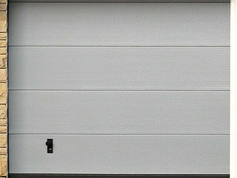
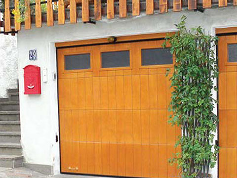
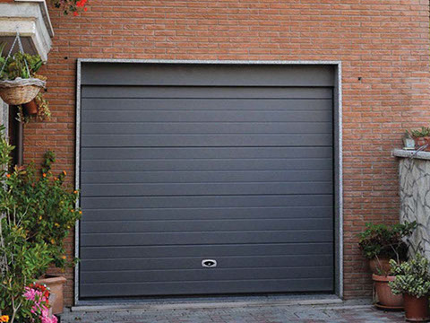
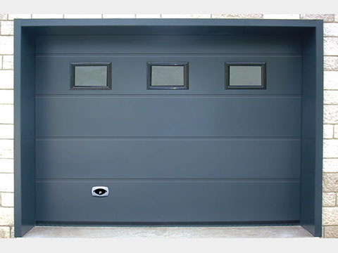
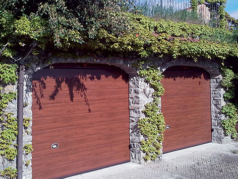
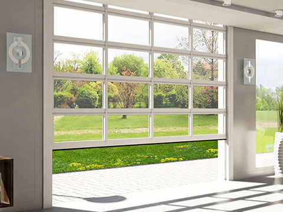
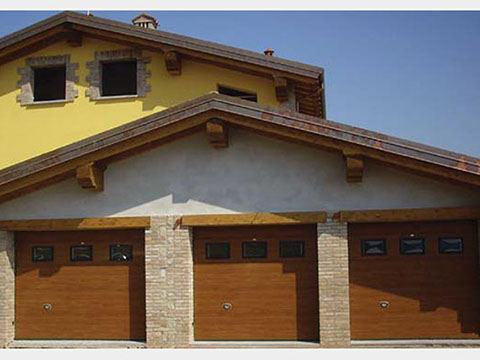
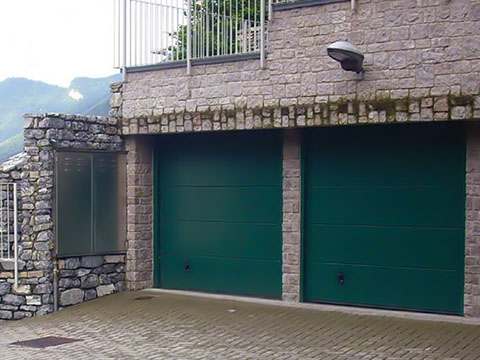

La selezione di Sezionali della linea Ferrero GENIUS
La vasta selezione di porte sezionali Ferraro: comodità, design elegante e praticità in un unico pacchetto. I prodotti sono pensati e progettati sia per l'uso civile che per quello industriale dal 1983. L'azienda si distingue dai principali concorrenti per la sicurezza e per l'alta personalizzazione dei propri prodotti. La Ferraro impiega oltre 70 persone e opera in un'area di 10.000 mq. I prodotti di punta: GENIUS PORTONI SEZIONALI: Il portone sezionale Genius, è disponibile in otto modelli in due versioni: Elegant e Classic. Ogni portone Ferraro è garantito 10 anni grazie al processo produttivo made in Italy. DOMINUS SERRANDE:La serranda Dominus è disponibile in 20 modelli di diversi materiali tutti con sistema salva spazio. L'affidabilità delle serrande Dominus è garantita dal processo produttivo dell'azienda Ferraro made in Italy. La serranda caratterizza da tempo l’estetica esterna di case, edifici e negozi; è difficile trovare validi sostituti che posseggano tutte le sue caratteristiche: struttura semplice, robusta e flessibile, meccanismo di avvolgimento salvaspazio, ampia scelta di modelli e colori.
Astro
Pannello-Astro-Microdiamantato. Il modello Astro si riconosce dall'originalità dei pannelli caratterizzati e dal disegno microdiamantato. Il riflesso della luce sulla superficie del manto crea un gradevole gioco di righe chiaro-scuro. Viene richiesto soprattutto nelle ambientazioni moderne dove prevale l'utilizzo del metallo. Non a caso, il colore più utilizzato per questo modello è il Grigio Metallizzato Ral 9006.
Canova
l modello Canova è la soluzione ideale per la chiusura dei garage collocati in contesti architettonici dove la presenza del legno è un elemento predominante. Il portone sezionale Canova conserva la stessa struttura dei portoni realizzati con i pannelli di lamiera di acciaio, con l'unica differenza che il manto è composto da pannelli di legno massello. Lo stile inconfondibile del legno lo si percepisce dai disegni proposti: cassettoni, doghe orizzontali o verticali ma è possibile scegliere anche tra una vasta gamma di pantografati, anche su disegno specifico del cliente. I materiali normalmente utilizzati sono il Larice, l'Abete, il Pino Russo Fenolico, l'Okoumè e, a richiesta, altre essenze; vengono opportunamente trattati per essere collocati all'esterno.
Edison
Ideale per restare sul classico. Il modello Edison si identifica come il modello più tradizionale; è indiscutibilmente il disegno che ha contraddistinto la storia del portone sezionale. La sintesi della robustezza: le righe longitudinali, oltre a rappresentare un motivo, fungono da nervature di irrigidimento della lamiera e per questo lo si consiglia anche per portoni di grandi dimensioni.
Gamma
Il modello Gamma, apparentemente simile al Master, propone un giunto di accoppiamento tra i pannelli molto marcato, mettendo in risalto le grandi doghe. Arricchisce la già ampia gamma di soluzioni e modelli che consentono nuove varianti per realizzazioni sempre più esclusive. I colori simil Legno sono quelli che più si addicono per Gamma ma non dispiacciono i colori a tinta pastello.
Lennox
Lennox è il modello più richiesto della collezione Genius. Questo senza ombra di dubbio è dovuto alla sobrietà del disegno che ben si armonizza con il classico ed il moderno, il contemporaneo e il futuristico. Nulla è lasciato al caso ma tutto è frutto di una meticolosa analisi e scelta dei materiali; questa è la filosofia della Ferraro per il portone Lennox, oggi uno dei sezionali più affidabili tra quelli in commercio.
Light
Quando la luce all'interno del garage o dell'autosalone è un'esigenza, quando l'areazione all'interno del box o dell'autofficina è questione di sicurezza, la risposta è Genius Light. Il portone sezionale Genius nella versione Light conserva la medesima struttura con l'unica differenza che il manto è composto da pannelli finestrati realizzati con profili di alluminio estruso. Può essere interamente finestrato per ottenere la massima luminosità o areazione oppure i pannelli finestrati si possono alternare a quelli coibentati di lamiera del modello che più si preferisce. Novità : a richiesta i profili di alluminio possono essere esternamente plastificati finto legno ed internamente verniciati bianco Ral 9010.
Magic
Il modello Magic, per la sua particolare estetica caratterizzata dall'alternarsi di doghe di altezze diverse, è unico nel suo genere in quanto i pannelli presentano una riga longitudinale decentrata e ben marcata. A portone chiuso, si apprezza l'asimmetricità dei dogoni alti cm 35 che si alternano alle doghe di cm 15. Per la sua particolare estetica, mette in risalto soprattutto con i colori legno, Magic è consigliato nelle aree di montagna dove sovente viene richiesta questa particolaritè architettonica, nel rispetto della tradizione di quei luoghi.
Master
Master: un mix vincente di sobrietè ed eleganza espressa dalla semplicità dei pannelli. Nessuna doga, nessuna riga ma solo lamiera piana che esalta la perfezione e nel contempo manifesta una maestosa imponenza; per queste peculiarità Master si adatta a qualsiasi contesto urbanistico, convincendo anche i clienti più indecisi. Per poter montare Genius occorre poco spazio; gli ingombri laterali e superiori sono ridottissimi per cui la dimensione del vano è quasi interamente sfruttabile. Se volete differenziarvi, il modello Master è quello che più si predispone per la personalizzazione estetica del portone con l'applicazione di decori in metallo o per riprodurre sull'intera superficie del portone, la stampa digitalizzata di immagini a scelta dal cliente.
Informazioni aggiuntive
Manto
Il manto dei Portoni Sezionali Genius è composto da pannelli coibentati di spessore 40 mm, realizzati da doppia lamiera di acciaio zincato preverniciato (versione Classic) o plastificato (versione Elegant), con interposta schiuma poliuretanica ad alta densità ed esente da CFC che assicura al portone sezionale Genius un ridotto coefficiente di trasmittanza termica ed un ottimale isolamento acustico, grazie anche all'interruzione del ponte termico tra lamiera esterna ed interna. La particolare sezione del pannello garantisce l'antipizzicamento delle dita secondo la norma EN12604. A seconda della dimensione dei portoni e/o del colore dei pannelli, vengono applicati all'interno profili di rinforzo ad omega di acciaio verniciato Bianco Ral 9010
Guide
Le guide di scorrimento sono realizzate con profili di acciaio di adeguato spessore
e di sezione tale da contenere le ruote in nylon che supportano i pannelli.
Speciali piastre d'angolo autoportanti, fissate all'estremità superiore dei profili
angolari,
sostengono il gruppo molle di bilanciamento e la veletta esterna quando richiesta.
Il tratto orizzontale di scorrimento è costituito da un doppio profilo guida di
cui
quello posizionato in basso ha il terminale curvo che si attesta perfettamente con
la guida verticale per consentire la continuità di scorrimento del portone.
La seconda guida (posizionata verso il soffitto) termina con una curva tronca
nella quale viene incanalata solo la ruota posizionata sulla parte superiore
dell’ultimo pannello con lo scopo di garantire la perfetta chiusura del manto.
La doppia guida viene fissata alla muratura mediante staffe angolari pre-forate.
Sistema di bilanciamento
Il bilanciamento del portone sezionale è assicurato da molle di torsione di acciaio
armonico zincato.
Le molle sono fissate sull'albero tramite mandrini di alluminio pressofuso; l'albero
è di
acciaio zincato di adeguato spessore ed è di sezione tubolare con cava per
l'alloggiamento
delle chiavette di sicurezza.
Sull'estremità sono fissati i tamburi di alluminio sui quali si avvolgono le funi di
acciaio
che sollevano il portone. Il sistema è calcolato per un utilizzo di 15.000 cicli 4
cicli giorno
per 10 anni ma a richiesta può essere fornito un sistema per uso intensivo sino a
100.000 cicli.
Il carter copri molle, quando previsto o richiesto, è realizzato in acciaio preverniciato
colore bianco.
Sicurezza
Al fine di non arrecare danni a persone e cose, il sezionale è corredato di dispositivi di sicurezza che bloccano la movimentazione del portone in caso di rottura dei cavi di sollevamento e delle molle di torsione. Ove previsto o se richiesti, vengono applicate sulle ruote di scorrimento speciali protezioni in nylon che evitano lo schiacciamento delle dita durante il funzionamento del portone.
Chiusura
Sul portone viene sempre applicata una impugnatura di materiale plastico con marchio Ferraro; per assicurare la chiusura del portone, a richiesta, può essere applicato internamente un chiavistello di acciaio (accertarsi che nel garage sia presente un altro accesso o il portone sezionale abbia inserito una porta pedonale) o una serratura con cilindro e pomolo esterno. Nei portoni apribili con motori a traino (a richiesta), la chiusura del portone è garantita dall'azione ostativa del motore che blocca l'apertura anche quando non c'è energia elettrica, mentre per quelli apribili con motore laterale a richiesta, viene applicata una serratura elettrica che si attiva automaticamente alla chiusura del portone.
Funzionamento
Il portone viene normalmente fornito per un funzionamento manuale; a richiesta può essere corredato con motori monofase 220V-50Hz del tipo a traino che rilevano automaticamente gli eventuali ostacoli durante la discesa e la salita invertendo o bloccando la manovra. È inoltre possibile applicare motori laterali che intervengono direttamente sull'albero molle. A richiesta sono disponibili vari accessori di manovra.
Etichettatura CE
Il portone viene sempre corredato da una targa CE con matricola di riferimento, manuale di installazione, uso – manutenzione – sicurezza e Dichiarazione di Prestazione DoP in conformità al nuovo Regolamento sui Materiali da Costruzione 305/2011 CPR ed in ottemperanza alla norma armonizzata EN 13241-1.
Garanzia
Il funzionamento del portone sezionale per garage Genius viene garantito per 10 anni dalla data di acquisto del portone. Maggiori dettagli nelle Condizioni Generali di Vendita.
Detrazione fiscale & risparmio energetico
I portoni sezionali Genius, grazie alla qualità delle schiume utilizzate per la produzione dei pannelli,
alle guarnizioni di tenuta applicate tra i pannelli,
sulle guide verticali, sulla veletta superiore e sul bordo inferiore a pavimento,
garantiscono un ottimo isolamento termico e acustico.
I portoni sezionali rientrano nella categoria dei prodotti che contribuiscono al risparmio energetico dei fabbricati
e pertanto possono beneficiare delle detrazioni fiscali.
Per poter usufruire di tali detrazioni è necessario che il locale in cui il portone verrà installato sia riscaldato.